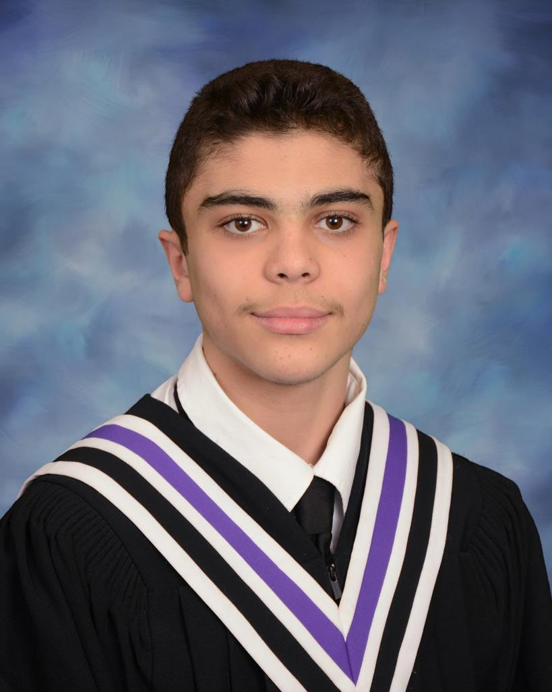
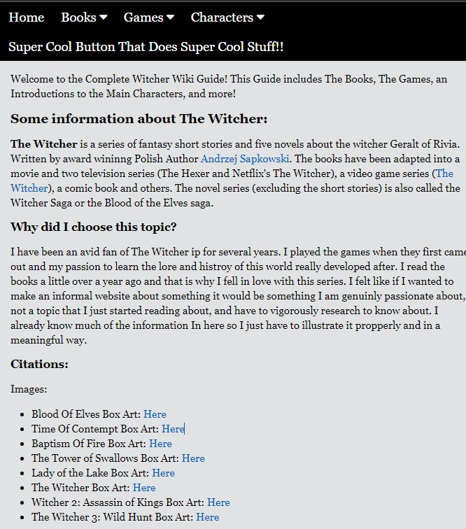

Hi,
I'm Rawhi Alfar

About
I'm Rawhi Alfar
Rawhi Alfar is a third year Software Engineer Student at the University of Guelph. Rawhi enjoys working on projects and learning new things as he goes along. He is always open for oppurtinities and learn from others. Coding is a passion of his that he wishes to keep doing for the foreseeable future.
Projects
Witcher Wiki
The Witcher Wiki Website was my first HTML project that I worked on. It is a website that alows a user to explore a World of fiction Called The Witcher.
Github RepostiryWeather App

The Weather App was most likely my most ambitious solo project. Since it required me learning JavaScript along the way it was a great learning tool to help me get used to developing with Js.
Github Repository